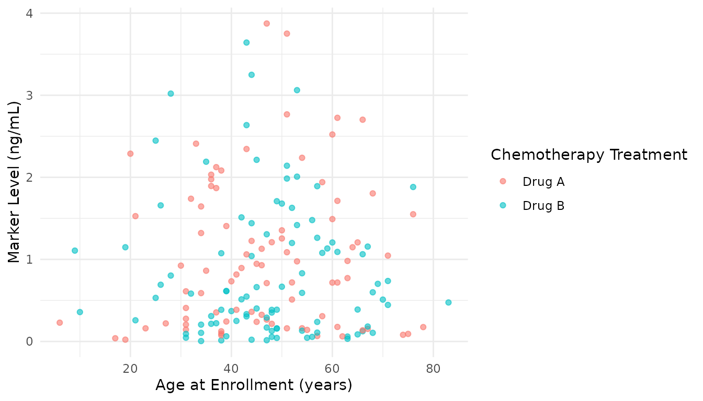
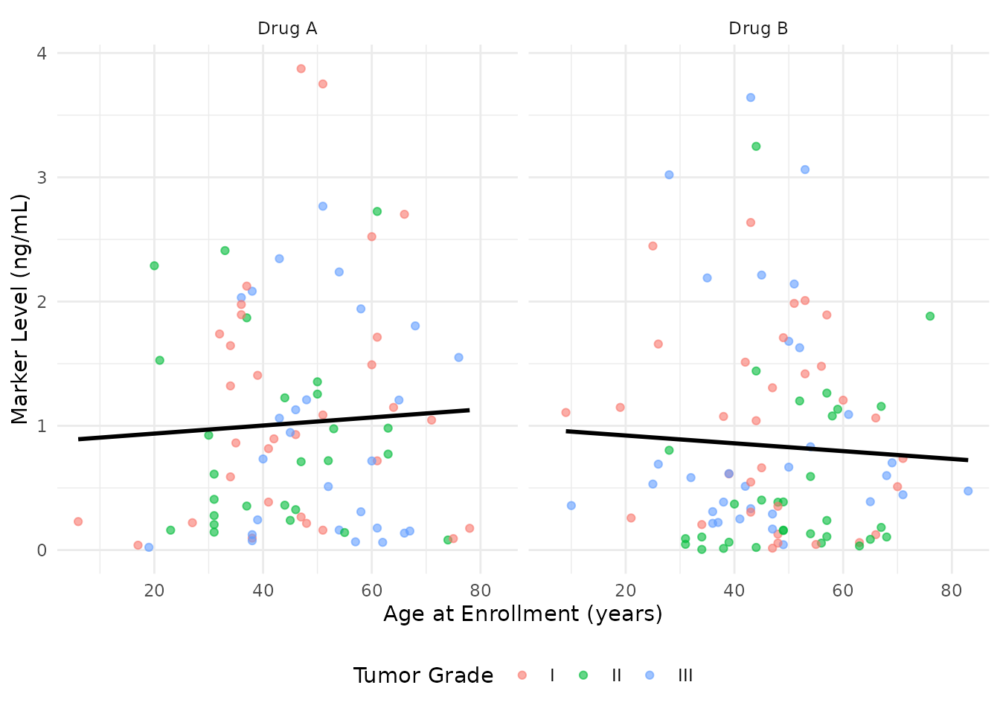
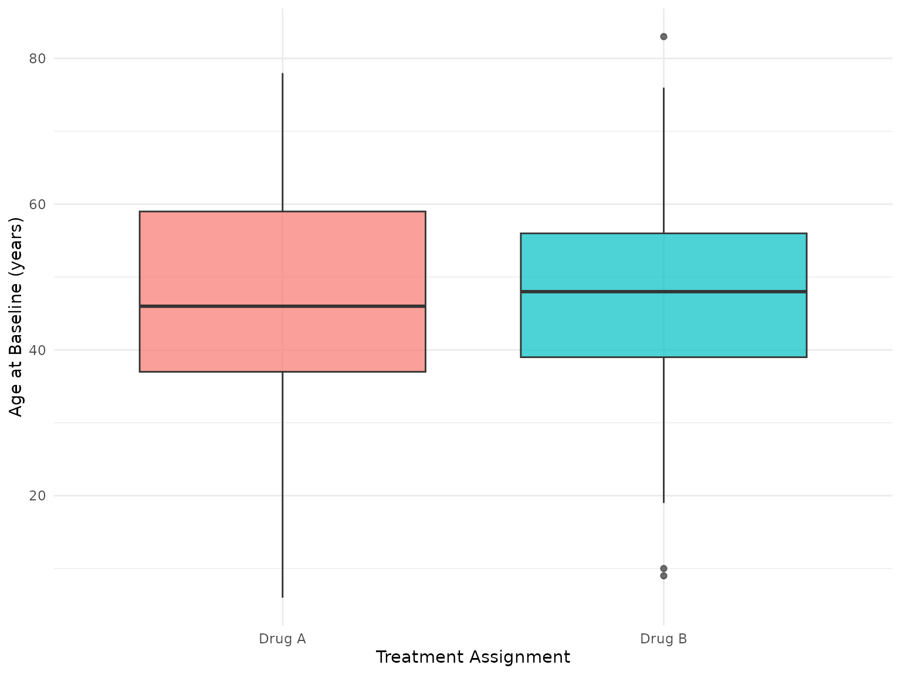
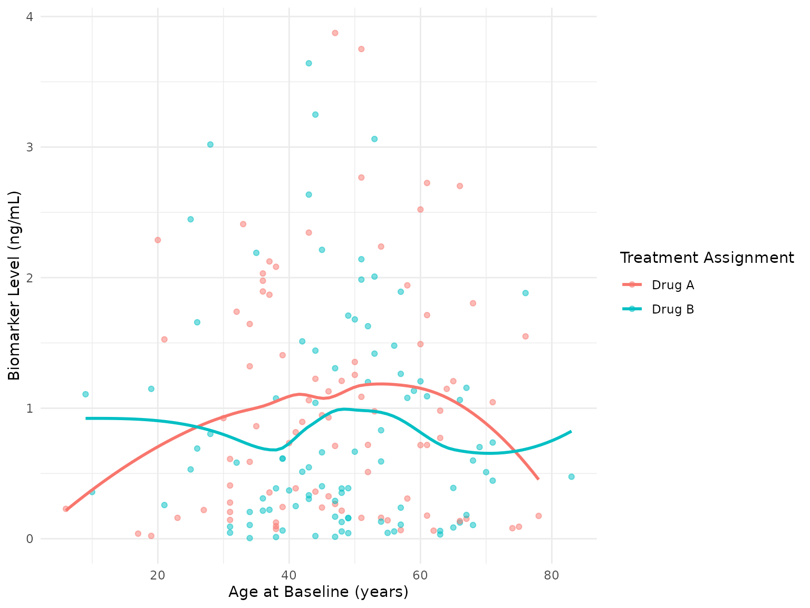
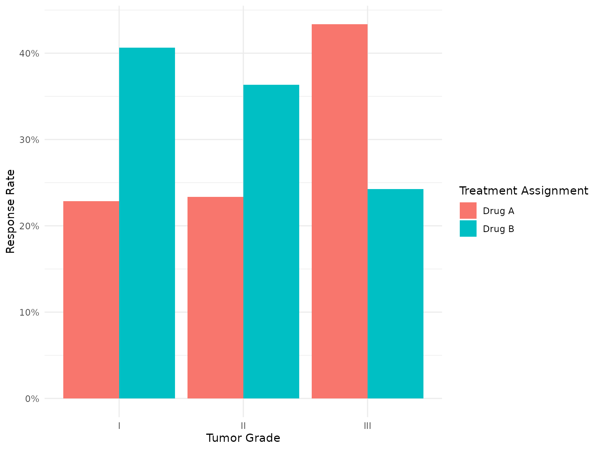

Automatic Variable Labeling
labeling.Rmd
library(sumExtras)
library(gtsummary)
library(dplyr)
library(gt)
# Apply the recommended JAMA theme
use_jama_theme()Overview
One of the most time-consuming aspects of creating publication-ready tables and plots is labeling variables with human-readable descriptions. Instead of manually typing labels for every variable in every table and plot, sumExtras provides a unified labeling system that works across gtsummary and ggplot2.
This vignette covers:
- How R’s label attribute system works and why it matters
- Creating and maintaining data dictionaries
- Labeling gtsummary tables with
add_auto_labels() - Setting label attributes with
apply_labels_from_dictionary() - Controlling label priority when multiple sources exist
- Cross-package workflows with gtsummary and ggplot2
- Real-world analysis examples
How It Works: The R Label Convention
sumExtras uses R’s built-in attr() function to work with
variable labels - the same labeling approach used by haven, Hmisc,
labelled, and ggplot2 4.0+. This means labels work seamlessly across the
R ecosystem, whether you’re creating tables with gtsummary, plots with
ggplot2, or outputs with gt.
Understanding Label Attributes
Labels in R are stored as attributes on individual variables. Here’s what happens behind the scenes:
# Create a simple dataset
trial_example <- trial
# Set a label attribute on a variable
attr(trial_example$age, "label") <- "Age at Enrollment (years)"
# Check the label
attr(trial_example$age, "label")
#> [1] "Age at Enrollment (years)"Once set, this label attribute is recognized by:
- gtsummary - Used in table headers and variable labels
- ggplot2 4.0+ - Automatically used for axis and legend labels
- gt - Honored in table outputs
- Hmisc - Compatible with its labeling functions
- haven - Preserved when reading/writing SAS, SPSS, Stata files
Where Labels Come From
Your data may already have labels from various sources:
-
Statistical software imports -
haven::read_sas(),haven::read_spss(),haven::read_stata() -
R packages - Hmisc’s
label(), labelled package functions - Manual assignment - Setting attributes directly
- Collaborative projects - Labels from other team members
-
sumExtras -
apply_labels_from_dictionary()
The key is that if labels are there, sumExtras can use them. This flexibility means one labeling system works everywhere - no matter where your data came from or how it was prepared.
Creating a Data Dictionary
A data dictionary serves dual purposes: it documents your variables and provides labels for automatic application. The dictionary is simply a data frame with two required columns:
-
Variable: The exact variable names from your dataset -
Description: Human-readable labels you want to display
# Create a dictionary for the trial dataset
dictionary <- tibble::tribble(
~Variable, ~Description,
"trt", "Chemotherapy Treatment",
"age", "Age at Enrollment (years)",
"marker", "Marker Level (ng/mL)",
"stage", "T Stage",
"grade", "Tumor Grade",
"response", "Tumor Response",
"death", "Patient Died"
)
dictionary
#> # A tibble: 7 × 2
#> Variable Description
#> <chr> <chr>
#> 1 trt Chemotherapy Treatment
#> 2 age Age at Enrollment (years)
#> 3 marker Marker Level (ng/mL)
#> 4 stage T Stage
#> 5 grade Tumor Grade
#> 6 response Tumor Response
#> 7 death Patient DiedBest Practices for Dictionaries
In real projects, you would typically:
- Store externally - Keep the dictionary as a CSV file or database table
- Load once - Read it at the beginning of your analysis script
- Version control - Track changes to labels over time
- Share widely - Use the same dictionary across all project analyses
Example of loading from a CSV:
# Typically at the top of your analysis script
dictionary <- readr::read_csv("data/variable_dictionary.csv")This centralizes your variable documentation and ensures consistency across all outputs.
Labeling gtsummary Tables with add_auto_labels()
The add_auto_labels() function is designed to be
flexible and intelligent. It can work with dictionaries, pre-labeled
data, or both, and it always respects manual overrides.
Method 1: Pass Dictionary Explicitly
The most straightforward approach is to pass your dictionary directly to the function:
trial |>
tbl_summary(by = trt, include = c(age, grade, marker)) |>
add_auto_labels(dictionary = dictionary) |>
extras()|
Overall N = 2001 |
Drug A N = 981 |
Drug B N = 1021 |
p-value2 | |
|---|---|---|---|---|
| Age | 47 (38, 57) | 46 (37, 60) | 48 (39, 56) | 0.718 |
| Unknown | 11 | 7 | 4 | |
| Grade | 0.871 | |||
| I | 68 (34%) | 35 (36%) | 33 (32%) | |
| II | 68 (34%) | 32 (33%) | 36 (35%) | |
| III | 64 (32%) | 31 (32%) | 33 (32%) | |
| Marker Level (ng/mL) | 0.64 (0.22, 1.41) | 0.84 (0.23, 1.60) | 0.52 (0.18, 1.21) | 0.085 |
| Unknown | 10 | 6 | 4 | |
| 1 Median (Q1, Q3); n (%) | ||||
| 2 Wilcoxon rank sum test; Pearson’s Chi-squared test | ||||
This approach is explicit and clear - you can see exactly where the labels are coming from.
Method 2: Automatic Discovery
If you have a dictionary object in your environment,
add_auto_labels() will find it automatically without
needing to pass it explicitly:
# Dictionary is already in environment from above
trial |>
tbl_summary(by = trt, include = c(age, stage, response)) |>
add_auto_labels() |> # Finds dictionary automatically
extras()
#> Auto-labeling from 'dictionary' object in your environment (this message will only show once per session)|
Overall N = 2001 |
Drug A N = 981 |
Drug B N = 1021 |
p-value2 | |
|---|---|---|---|---|
| Age | 47 (38, 57) | 46 (37, 60) | 48 (39, 56) | 0.718 |
| Unknown | 11 | 7 | 4 | |
| T Stage | 0.866 | |||
| T1 | 53 (27%) | 28 (29%) | 25 (25%) | |
| T2 | 54 (27%) | 25 (26%) | 29 (28%) | |
| T3 | 43 (22%) | 22 (22%) | 21 (21%) | |
| T4 | 50 (25%) | 23 (23%) | 27 (26%) | |
| Tumor Response | 61 (32%) | 28 (29%) | 33 (34%) | 0.530 |
| Unknown | 7 | 3 | 4 | |
| 1 Median (Q1, Q3); n (%) | ||||
| 2 Wilcoxon rank sum test; Pearson’s Chi-squared test | ||||
The first time add_auto_labels() finds your dictionary
automatically in a session, you’ll see a friendly message:
“Auto-labeling from ‘dictionary’ object in your environment (this
message will only show once per session)”. This confirms that your
dictionary was found and is being used.
This is particularly convenient when working in an R Markdown or Quarto document where your dictionary is defined once at the top.
Method 3: Working with Pre-Labeled Data
If your data already has label attributes (from packages like haven,
labelled, or set manually), add_auto_labels() can read them
directly:
# Create data with label attributes
labeled_trial <- trial
attr(labeled_trial$age, "label") <- "Patient Age at Baseline"
attr(labeled_trial$marker, "label") <- "Biomarker Concentration (ng/mL)"
# Use attributes for labeling (no dictionary needed)
labeled_trial |>
tbl_summary(by = trt, include = c(age, marker)) |>
add_auto_labels() # Reads from label attributes| Characteristic |
Drug A N = 981 |
Drug B N = 1021 |
|---|---|---|
| Patient Age at Baseline | 46 (37, 60) | 48 (39, 56) |
| Unknown | 7 | 4 |
| Biomarker Concentration (ng/mL) | 0.84 (0.23, 1.60) | 0.52 (0.18, 1.21) |
| Unknown | 6 | 4 |
| 1 Median (Q1, Q3) | ||
This is especially useful when working with data imported from SAS, SPSS, or Stata files that already contain variable labels.
Manual Overrides Always Win
No matter where labels come from (dictionary or attributes), manual
labels specified in your tbl_summary() call always take
precedence:
trial |>
tbl_summary(
by = trt,
include = c(age, grade, marker),
label = list(age ~ "Age (Custom Label)") # This overrides dictionary/attributes
) |>
add_auto_labels(dictionary = dictionary) |>
extras()|
Overall N = 2001 |
Drug A N = 981 |
Drug B N = 1021 |
p-value2 | |
|---|---|---|---|---|
| Age (Custom Label) | 47 (38, 57) | 46 (37, 60) | 48 (39, 56) | 0.718 |
| Unknown | 11 | 7 | 4 | |
| Grade | 0.871 | |||
| I | 68 (34%) | 35 (36%) | 33 (32%) | |
| II | 68 (34%) | 32 (33%) | 36 (35%) | |
| III | 64 (32%) | 31 (32%) | 33 (32%) | |
| Marker Level (ng/mL) | 0.64 (0.22, 1.41) | 0.84 (0.23, 1.60) | 0.52 (0.18, 1.21) | 0.085 |
| Unknown | 10 | 6 | 4 | |
| 1 Median (Q1, Q3); n (%) | ||||
| 2 Wilcoxon rank sum test; Pearson’s Chi-squared test | ||||
This gives you complete control: use automated labeling for most variables, but override specific ones when needed.
Working with Regression Tables
The labeling system works seamlessly with regression tables too:
lm(marker ~ age + grade + stage, data = trial) |>
tbl_regression() |>
add_auto_labels(dictionary = dictionary)| Characteristic | Beta | 95% CI | p-value |
|---|---|---|---|
| Age at Enrollment (years) | 0.00 | -0.01, 0.01 | >0.9 |
| Tumor Grade | |||
| I | — | — | |
| II | -0.35 | -0.67, -0.04 | 0.027 |
| III | -0.12 | -0.43, 0.19 | 0.4 |
| T Stage | |||
| T1 | — | — | |
| T2 | 0.33 | -0.01, 0.67 | 0.057 |
| T3 | 0.21 | -0.17, 0.58 | 0.3 |
| T4 | 0.14 | -0.22, 0.50 | 0.4 |
| Abbreviation: CI = Confidence Interval | |||
Labels are applied to both the predictors and the outcome variable, making regression output immediately readable.
Setting Label Attributes with
apply_labels_from_dictionary()
While add_auto_labels() works directly on gtsummary
tables, apply_labels_from_dictionary() takes a different
approach: it sets label attributes on your data frame. This enables
cross-package workflows where the same labels work in both gtsummary
tables and ggplot2 visualizations.
Basic Usage
# Apply labels to data as attributes
trial_labeled <- trial |>
apply_labels_from_dictionary(dictionary = dictionary)
# Check that labels were set
attr(trial_labeled$age, "label")
#> [1] "Age at Enrollment (years)"
attr(trial_labeled$marker, "label")
#> [1] "Marker Level (ng/mL)"Now this labeled data can be used anywhere R label attributes are recognized.
Use Labeled Data in gtsummary
# Labels are automatically recognized
trial_labeled |>
tbl_summary(by = trt, include = c(age, marker, grade)) |>
add_auto_labels() |> # Reads attributes automatically
extras()|
Overall N = 2001 |
Drug A N = 981 |
Drug B N = 1021 |
p-value2 | |
|---|---|---|---|---|
| Age at Enrollment (years) | 47 (38, 57) | 46 (37, 60) | 48 (39, 56) | 0.718 |
| Unknown | 11 | 7 | 4 | |
| Marker Level (ng/mL) | 0.64 (0.22, 1.41) | 0.84 (0.23, 1.60) | 0.52 (0.18, 1.21) | 0.085 |
| Unknown | 10 | 6 | 4 | |
| Tumor Grade | 0.871 | |||
| I | 68 (34%) | 35 (36%) | 33 (32%) | |
| II | 68 (34%) | 32 (33%) | 36 (35%) | |
| III | 64 (32%) | 31 (32%) | 33 (32%) | |
| 1 Median (Q1, Q3); n (%) | ||||
| 2 Wilcoxon rank sum test; Pearson’s Chi-squared test | ||||
Notice we don’t need to pass the dictionary - the labels are already stored as attributes on the data.
Use Labeled Data in ggplot2
With ggplot2 version 4.0 and later, label attributes are automatically used for axis and legend labels:
# Labels appear automatically on axes and legend!
trial_labeled |>
ggplot(aes(x = age, y = marker, color = trt)) +
geom_point(alpha = 0.6) +
theme_minimal()
No need to manually specify labs() - the labels from
your dictionary are applied automatically to the x-axis, y-axis, and
legend.
Controlling Label Priority
When your data has both dictionary labels and attribute labels
available, add_auto_labels() needs to decide which one to
use. You control this with a global option.
Default Behavior: Attributes Have Priority
By default, label attributes take precedence over dictionary labels.
This respects labels that may have been carefully set by data import
functions (like haven::read_sas()) or other preprocessing
steps:
# Create data with both sources of labels
trial_both <- trial
attr(trial_both$age, "label") <- "Age from Attribute"
# Also have dictionary (already defined above)
dictionary_conflict <- tibble::tribble(
~Variable, ~Description,
"age", "Age from Dictionary"
)
# Default: attribute wins
trial_both |>
tbl_summary(by = trt, include = age) |>
add_auto_labels(dictionary = dictionary_conflict) |>
extras()|
Overall N = 2001 |
Drug A N = 981 |
Drug B N = 1021 |
p-value2 | |
|---|---|---|---|---|
| Age from Attribute | 47 (38, 57) | 46 (37, 60) | 48 (39, 56) | 0.718 |
| Unknown | 11 | 7 | 4 | |
| 1 Median (Q1, Q3) | ||||
| 2 Wilcoxon rank sum test | ||||
# Shows: "Age from Attribute"Prefer Dictionary: When to Use TRUE
If you want dictionary labels to override attribute labels, set the
sumExtras.preferDictionary option to TRUE.
This is useful when you’re actively maintaining a master dictionary and
want it to be the single source of truth:
# Prioritize dictionary over attributes
options(sumExtras.preferDictionary = TRUE)
trial_both |>
tbl_summary(by = trt, include = age) |>
add_auto_labels(dictionary = dictionary_conflict) |>
extras()
#> Warning: Failed to add overall column.
#> ✖ Error: An error occured in `add_overall()`, and the overall statistic cannot be
#> added.
#> Have variable labels changed since the original call to `tbl_summary()`?
#> ℹ Continuing without overall column.|
Drug A N = 981 |
Drug B N = 1021 |
p-value2 | |
|---|---|---|---|
| Age from Dictionary | 46 (37, 60) | 48 (39, 56) | 0.718 |
| Unknown | 7 | 4 | |
| 1 Median (Q1, Q3) | |||
| 2 Wilcoxon rank sum test | |||
# Shows: "Age from Dictionary"
# Reset to default for rest of vignette
options(sumExtras.preferDictionary = FALSE)When to Use Each Setting
-
FALSE(default): You’re importing labeled data from SAS/Stata/SPSS and want to preserve those labels -
TRUE: You maintain a master dictionary and want it to override any existing labels
Remember: manual labels set via label = list(...) in
tbl_summary() always win, regardless of this option.
Cross-Package Workflows: Tables and Plots
Often you need consistent labels across both gtsummary tables and
ggplot2 visualizations. The combination of
apply_labels_from_dictionary() and
add_auto_labels() enables this seamlessly.
Complete Workflow Example
Here’s a realistic workflow showing how one dictionary serves both gtsummary tables and ggplot2 visualizations:
# 1. Define dictionary once
my_dictionary <- tibble::tribble(
~Variable, ~Description,
"age", "Age at Enrollment (years)",
"marker", "Marker Level (ng/mL)",
"trt", "Treatment Group",
"grade", "Tumor Grade",
"stage", "T Stage"
)
# 2. Apply to data
trial_final <- trial |>
apply_labels_from_dictionary(my_dictionary)
# 3. Create gtsummary table
trial_final |>
tbl_summary(
by = trt,
include = c(age, marker, grade, stage)
) |>
add_auto_labels() |>
extras()|
Overall N = 2001 |
Drug A N = 981 |
Drug B N = 1021 |
p-value2 | |
|---|---|---|---|---|
| Age at Enrollment (years) | 47 (38, 57) | 46 (37, 60) | 48 (39, 56) | 0.718 |
| Unknown | 11 | 7 | 4 | |
| Marker Level (ng/mL) | 0.64 (0.22, 1.41) | 0.84 (0.23, 1.60) | 0.52 (0.18, 1.21) | 0.085 |
| Unknown | 10 | 6 | 4 | |
| Tumor Grade | 0.871 | |||
| I | 68 (34%) | 35 (36%) | 33 (32%) | |
| II | 68 (34%) | 32 (33%) | 36 (35%) | |
| III | 64 (32%) | 31 (32%) | 33 (32%) | |
| T Stage | 0.866 | |||
| T1 | 53 (27%) | 28 (29%) | 25 (25%) | |
| T2 | 54 (27%) | 25 (26%) | 29 (28%) | |
| T3 | 43 (22%) | 22 (22%) | 21 (21%) | |
| T4 | 50 (25%) | 23 (23%) | 27 (26%) | |
| 1 Median (Q1, Q3); n (%) | ||||
| 2 Wilcoxon rank sum test; Pearson’s Chi-squared test | ||||
# 4. Create ggplot2 visualization with same labels
trial_final |>
filter(!is.na(marker)) |>
ggplot(aes(x = age, y = marker)) +
geom_point(aes(color = grade), alpha = 0.6) +
geom_smooth(method = "lm", se = FALSE, color = "black") +
facet_wrap(~trt) +
theme_minimal() +
theme(legend.position = "bottom")
#> `geom_smooth()` using formula = 'y ~ x'
Notice how the axis labels, legend titles, and facet labels are
automatically pulled from your dictionary - no manual
labs() calls needed! This workflow ensures perfect
consistency between your tables and plots.
Benefits of This Approach
- One source of truth - Labels defined once in the dictionary
- Consistency - Same labels in tables and plots automatically
- Maintainability - Update labels in one place
-
Efficiency - No repetitive
labs()orlabel = list()calls - Documentation - Dictionary serves as project documentation
Real-World Example: Complete Analysis
Here’s a comprehensive example showing how the labeling system streamlines a typical analysis workflow:
# Step 1: Define your master dictionary
# In practice, this would be loaded from a CSV file
study_dictionary <- tibble::tribble(
~Variable, ~Description,
"trt", "Treatment Assignment",
"age", "Age at Baseline (years)",
"marker", "Biomarker Level (ng/mL)",
"stage", "Clinical Stage",
"grade", "Tumor Grade",
"response", "Treatment Response",
"death", "Patient Died"
)
# Step 2: Apply labels to your data once
trial_study <- trial |>
apply_labels_from_dictionary(study_dictionary)
# Step 3: Create multiple tables using the same labels
# Table 1: Overall summary
trial_study |>
tbl_summary(include = c(age, marker, stage, grade)) |>
add_auto_labels() |>
extras(overall = TRUE, pval = FALSE)| N = 2001 | |
|---|---|
| Age at Baseline (years) | 47 (38, 57) |
| Unknown | 11 |
| Biomarker Level (ng/mL) | 0.64 (0.22, 1.41) |
| Unknown | 10 |
| Clinical Stage | |
| T1 | 53 (27%) |
| T2 | 54 (27%) |
| T3 | 43 (22%) |
| T4 | 50 (25%) |
| Tumor Grade | |
| I | 68 (34%) |
| II | 68 (34%) |
| III | 64 (32%) |
| 1 Median (Q1, Q3); n (%) | |
# Table 2: By treatment comparison
trial_study |>
tbl_summary(
by = trt,
include = c(age, marker, response)
) |>
add_auto_labels() |>
extras()|
Overall N = 2001 |
Drug A N = 981 |
Drug B N = 1021 |
p-value2 | |
|---|---|---|---|---|
| Age at Baseline (years) | 47 (38, 57) | 46 (37, 60) | 48 (39, 56) | 0.718 |
| Unknown | 11 | 7 | 4 | |
| Biomarker Level (ng/mL) | 0.64 (0.22, 1.41) | 0.84 (0.23, 1.60) | 0.52 (0.18, 1.21) | 0.085 |
| Unknown | 10 | 6 | 4 | |
| Treatment Response | 61 (32%) | 28 (29%) | 33 (34%) | 0.530 |
| Unknown | 7 | 3 | 4 | |
| 1 Median (Q1, Q3); n (%) | ||||
| 2 Wilcoxon rank sum test; Pearson’s Chi-squared test | ||||
# Table 3: Regression analysis
lm(marker ~ age + grade + stage, data = trial_study) |>
tbl_regression() |>
add_auto_labels()| Characteristic | Beta | 95% CI | p-value |
|---|---|---|---|
| Age at Enrollment (years) | 0.00 | -0.01, 0.01 | >0.9 |
| Tumor Grade | |||
| I | — | — | |
| II | -0.35 | -0.67, -0.04 | 0.027 |
| III | -0.12 | -0.43, 0.19 | 0.4 |
| T Stage | |||
| T1 | — | — | |
| T2 | 0.33 | -0.01, 0.67 | 0.057 |
| T3 | 0.21 | -0.17, 0.58 | 0.3 |
| T4 | 0.14 | -0.22, 0.50 | 0.4 |
| Abbreviation: CI = Confidence Interval | |||
# Step 4: Create plots using the same labels
# Plot 1: Age distribution by treatment
trial_study |>
ggplot(aes(x = trt, y = age, fill = trt)) +
geom_boxplot(alpha = 0.7) +
theme_minimal() +
theme(legend.position = "none")
# Plot 2: Marker vs age relationship
trial_study |>
filter(!is.na(marker)) |>
ggplot(aes(x = age, y = marker, color = trt)) +
geom_point(alpha = 0.5) +
geom_smooth(method = "loess", se = FALSE) +
theme_minimal()
#> `geom_smooth()` using formula = 'y ~ x'
# Plot 3: Response rates by grade and treatment
trial_study |>
filter(!is.na(response)) |>
count(grade, trt, response) |>
group_by(grade, trt) |>
mutate(prop = n / sum(n)) |>
filter(response == 1) |>
ggplot(aes(x = grade, y = prop, fill = trt)) +
geom_col(position = "dodge") +
scale_y_continuous(labels = scales::percent) +
labs(y = "Response Rate") +
theme_minimal()
This workflow demonstrates the power of the labeling system: define your labels once in a dictionary, apply them to your data, then create as many tables and plots as you need with consistent, professional labeling throughout.
Advanced Patterns
Working with Subsets
When you create subsets of labeled data, labels are preserved:
# Create a subset
trial_subset <- trial_labeled |>
filter(stage %in% c("T1", "T2")) |>
select(age, marker, stage, trt)
# Labels are still there
trial_subset |>
tbl_summary(by = trt) |>
add_auto_labels() |>
extras()|
Overall N = 1071 |
Drug A N = 531 |
Drug B N = 541 |
p-value2 | |
|---|---|---|---|---|
| Age at Enrollment (years) | 47 (38, 56) | 46 (37, 56) | 48 (42, 55) | 0.578 |
| Unknown | 3 | 3 | 0 | |
| Marker Level (ng/mL) | 0.60 (0.16, 1.35) | 0.75 (0.22, 1.35) | 0.44 (0.13, 1.32) | 0.223 |
| Unknown | 5 | 3 | 2 | |
| T Stage | 0.562 | |||
| T1 | 53 (50%) | 28 (53%) | 25 (46%) | |
| T2 | 54 (50%) | 25 (47%) | 29 (54%) | |
| T3 | — | — | — | |
| T4 | — | — | — | |
| 1 Median (Q1, Q3); n (%) | ||||
| 2 Wilcoxon rank sum test; Fisher’s Exact Test for Count Data with simulated p-value (based on 2000 replicates) | ||||
Combining with dplyr Operations
Labels survive most dplyr operations:
# Labels persist through mutations
trial_labeled |>
mutate(
age_group = cut(age, breaks = c(0, 50, 70, 100),
labels = c("<50", "50-70", ">70"))
) |>
select(age, age_group, marker, trt) |>
tbl_summary(by = trt, include = c(age, marker)) |>
add_auto_labels() |>
extras()|
Overall N = 2001 |
Drug A N = 981 |
Drug B N = 1021 |
p-value2 | |
|---|---|---|---|---|
| Age at Enrollment (years) | 47 (38, 57) | 46 (37, 60) | 48 (39, 56) | 0.718 |
| Unknown | 11 | 7 | 4 | |
| Marker Level (ng/mL) | 0.64 (0.22, 1.41) | 0.84 (0.23, 1.60) | 0.52 (0.18, 1.21) | 0.085 |
| Unknown | 10 | 6 | 4 | |
| 1 Median (Q1, Q3) | ||||
| 2 Wilcoxon rank sum test | ||||
Note: New variables created with mutate() won’t have
labels unless you set them explicitly or add them to your
dictionary.
Working with Multiple Dictionaries
For large projects, you might maintain separate dictionaries for different data domains:
# Demographics dictionary
demographics_dict <- tibble::tribble(
~Variable, ~Description,
"age", "Age at Enrollment (years)",
"sex", "Biological Sex"
)
# Clinical dictionary
clinical_dict <- tibble::tribble(
~Variable, ~Description,
"marker", "Marker Level (ng/mL)",
"stage", "T Stage",
"grade", "Tumor Grade"
)
# Combine for use
combined_dict <- bind_rows(demographics_dict, clinical_dict)
trial |>
tbl_summary(include = c(age, marker, grade)) |>
add_auto_labels(dictionary = combined_dict) |>
extras()
#> Warning: This table is not stratified (missing `by` argument).
#> ℹ Overall column and p-values require stratification.
#> ℹ Applying only `bold_labels()` and `modify_header(label ~ '')`.| N = 2001 | |
|---|---|
| Age | 47 (38, 57) |
| Unknown | 11 |
| Marker Level (ng/mL) | 0.64 (0.22, 1.41) |
| Unknown | 10 |
| Grade | |
| I | 68 (34%) |
| II | 68 (34%) |
| III | 64 (32%) |
| 1 Median (Q1, Q3); n (%) | |
Troubleshooting
Labels Not Appearing
If labels aren’t showing up, check:
- Variable names match exactly - Dictionary Variable column must match data exactly (case-sensitive)
- Dictionary in scope - If using auto-discovery, ensure dictionary object exists
- Manual labels present - Manual labels always override automatic ones
-
Attribute structure - Use
str(your_data)to verify label attributes exist
# Check for label attributes
str(trial_labeled$age)
#> num [1:200] 23 9 31 NA 51 39 37 32 31 34 ...
#> - attr(*, "label")= chr "Age at Enrollment (years)"Dictionary Not Found
If you get “dictionary not found” messages:
- Name the object ‘dictionary’ - Auto-discovery looks for an object named exactly “dictionary”
-
Pass explicitly - Use
add_auto_labels(dictionary = my_dict)if named differently - Check environment - Ensure dictionary is loaded in the current session
Conflicting Labels
When you have multiple label sources:
- Understand priority: attributes > dictionary (by default)
-
Use preferDictionary option: Set
options(sumExtras.preferDictionary = TRUE)to reverse -
Manual override: Use
label = list(var ~ "Custom")intbl_summary()for specific variables
Summary
The sumExtras labeling system provides a unified approach to variable labeling across your entire analysis:
-
add_auto_labels()- Smart labeling for gtsummary tables (uses dictionary or attributes) -
apply_labels_from_dictionary()- Set labels as data attributes for cross-package workflows - One dictionary - Consistent labels across tables, plots, and outputs
- Flexible priority - Control whether attributes or dictionary takes precedence
- Manual overrides - Always respected when you need custom labels
For more information:
-
vignette("sumExtras-intro")- Getting started with sumExtras -
vignette("styling")- Advanced table styling and formatting -
?add_auto_labels- Function documentation -
?apply_labels_from_dictionary- Function documentation
The labeling system is designed to save you time while ensuring consistency. Define your labels once, use them everywhere, and let sumExtras handle the rest.